Photon packet tracing¶
This example (available in examples/mcml/tracing) covers all the necessary steps for photon packet tracing in a two-layered turbid medium utilizing multimode optical fibers as sources and detectors.
Importing the required modules and submodules¶
Firstly, we import the submodule xopto.mcml.mc, which can be conveniently used as an interface to the neccessary submodules for sources, detectors, layers, simulators, etc., the submodule xopto.mcml.mcutil.fiber, which allows utilization of multimode optical fibers and the submodule xopto.cl.clinfo, which provides functions for working with OpenCL resources, i.e. available computational devices (CPUs, GPUs, etc.). Subsequently, we import the standard modules numpy and matplotlib.pyplot for dealing with multidimensional arrays and visualization.
from xopto.mcml import mc
from xopto.mcml.mcutil import fiber
from xopto.cl import clinfo
import numpy as np
import matplotlib.pyplot as pp
Note
Photon packet tracing can be done in the voxelated Monte Carlo model using the xopto.mcvox.mc submodule. For more information regarding the trace functionality, see Trace.
Computational device¶
The function gpu() accepts a unique string representation of the desired computational device, which can be found via listing all of the available OpenCL devices (see OpenCL devices).
cl_device = clinfo.gpu(device='NVIDIA GeForce')
Note
In this example, we have selected NVIDIA GeForce graphics processing unit. The string should be changed to an available computation device. It is sufficient to provide only a unique part that pertains to the desired computational device.
The layer stack¶
Next, we define the layer stack and corresponding optical properties. The layer stack of the medium is defined through the Layers constructor, which accepts a list of Layer objects representing each individual layer. The layers are stacked along the positive direction of the z coordinate axis, which points into the medium. See Basic example or The layer stack for more information regarding the layer construction. Briefly, the topmost and bottommost layers are used only to provide the optical properties of the surrounding medium, especially to properly reflect/refract the photon packets at the boundaries. Therefore, for a two-layered turbid medium four layers have to be defined. In this example, we set the thickness of the first layer corresponding to the turbid medium to 1 mm and of the second layer similarly to 1 mm. Next, we set the refractive index to 1.33 for the first and 1.4 of the second layer. The surrounding medium refractive index is set to 1.45 to mimic the refractive index of the multimode optical fiber core. This will lead to a proper reflection/refraction at the probe-medium interface (for more complex boundary condition see example Reflectance acquired with optical fibers and probes). The absorption and scattering coefficients are set to 1 1/cm and 125 1/cm for the first layer, and 2 1/cm and 125 1/cm for the second layer, respectively. Finally, the Henyey-Greenstein phase function is utilized in the first and second layer of the turbid medium with anisotropy factors 0.8 and 0.9, respectively.
layers = mc.mclayer.Layers([
mc.mclayer.Layer(d=0.0, n=1.45, mua=0.0, mus=0.0, pf=mc.mcpf.Hg(0.0)),
mc.mclayer.Layer(d=1e-3, n=1.33, mua=1e2, mus=125e2, pf=mc.mcpf.Hg(0.8)),
mc.mclayer.Layer(d=1e-3, n=1.4, mua=2e2, mus=125e2, pf=mc.mcpf.Hg(0.9)),
mc.mclayer.Layer(d=0.0, n=1.45, mua=0.0, mus=0.0, pf=mc.mcpf.Hg(0.0)),
])
Note
All quantities MUST be provided in appropriate units, i.e., distances in m, absorption and scattering coefficients in 1/m.
Source¶
Below we define a multimode fiber source from the fiber submodule having a core diameter dcore of 200 μm, combined diameter of core and cladding dcladding of 220 μm, core refractive index ncore of 1.45 and numerical aperture na of 0.22. The defined multimode fiber object MultimodeFiber is passed to the UniformFiber source constructor with specified parameters position and direction. In this case we displaced the source fiber along the  coordinate by -440 μm. The source is also positioned normally to the turbid medium, which is the case by default. The uniform fiber means that the photon packets are launched into the medium uniformly over the solid angle spanned by the numerical aperture of the optical fiber. For various other source definitions check Sources.
coordinate by -440 μm. The source is also positioned normally to the turbid medium, which is the case by default. The uniform fiber means that the photon packets are launched into the medium uniformly over the solid angle spanned by the numerical aperture of the optical fiber. For various other source definitions check Sources.
source = mc.mcsource.UniformFiber(
fiber=fiber.MultimodeFiber(
dcore=200e-6, dcladding=220e-6, ncore=1.452, na=0.22
),
position=(-440e-6, 0, 0),
direction=(0.0, 0.0, 1.0)
)
Detector¶
We define a multimode optical fiber detector at the bottom of the turbid medium (note that other types of detectors and their position can be defined, see Detectors). For the multimode optical fiber detector we use the same properties as for the source fiber. The MultimodeFiber is subsequently passed to the FiberLayout constructor, which accepts the position and direction of the multimode optical fiber detector. In this case we displaced the detector fiber along the coordinate by 440 μm. A list of FiberLayout objects can be passed to the xopto.mcml.mcdetector.probe.fiberarray.FiberArray. However, here we use a single multimode detector. The variable detector_bottom is subsequently passed to Detectors constructor as the bottom keyword argument.
detector_bottom = mc.mcdetector.FiberArray(
[fiber.FiberLayout(
fiber=fiber.MultimodeFiber(
dcore=200e-6, dcladding=220e-6, ncore=1.45, na=0.22
),
position=(440e-6, 0, d1 + d2),
direction=(0.0, 0.0, -1.0)
),]
)
detectors = mc.mcdetector.Detectors(
bottom=detector_bottom
)
Trace¶
Firstly, we define the total number of launched photon packets nphotons, which should be sufficiently small not to overflow the memory. Secondly, we define the number of recorded traces recorded_traces, which comes into play when photon packet traces are filtered and only selected ones satisfy the criterion. In such a case, it can occur that only a small number of photon packets are traced within a single Monte Carlo run and therefore multiple runs are required to satisfy the number of photon packets traces to amount to at least recorded_traces. Finally, the maximum expected number of events number_of_events along each photon packet trace has to be specified beforehand. This number depends on the source-detector position and optical properties. Ideally, one should run the photon packet with as high number_of_events as possible and do an analysis of the traces. In case the photon packets undergo significantly less events that specified initially with number_of_events, the latter can be reduced to conserve with the memory.
nphotons = 10000
recorded_traces = 100
number_of_events = 500
In this example we utilize two Trace objects. The first trace_no_filter stores all of the photon packets launched from the source multimode optical fiber, while the second trace_filter stores only the photon packets that were detected in the detector multimode optical fiber specified through a filter object Filter. The filter object accept various parameters and the reader should refer to the Trace for a more detailed description. In this example, the goal is to detect photon packets that are detected through the detector fiber at the bottom of the turbid medium. Therefore, the z parameter, which corresponds to the interval of the  coordinate at which the photon packet was terminated, is set to the thickness of the turbid medium
coordinate at which the photon packet was terminated, is set to the thickness of the turbid medium d1 + d2 with a small offset by 1 nm on both sides of the bottom boundary. The final direction of the detected photon packet should be within the acceptance angle of the multimode detector optical fiber. Since the photon packet is detected within the optical fiber (it has passed through the bottom boundary), the acceptance angle is 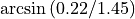 and the direction of the photon packet should therefore be between 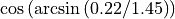 and  . Finally, the radius within which the photon packet final position can be provided with a 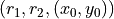, where 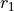 and 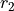 represent radius interval and
. Finally, the radius within which the photon packet final position can be provided with a 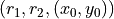, where 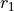 and 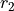 represent radius interval and  and 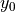 represent the displacement of the ring. In this case the radius should correspond to the radius of the fiber core and the displacement should correspond to the displacement of the multimode detector fiber.
and 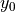 represent the displacement of the ring. In this case the radius should correspond to the radius of the fiber core and the displacement should correspond to the displacement of the multimode detector fiber.
# without filter
trace_no_filter = mc.mctrace.Trace(
maxlen=number_of_events, options=mc.mctrace.Trace.TRACE_ALL,
)
# using default simulator data types
eps = mc.mctypes.McDataTypes.eps
# with filter
filter = mc.mctrace.Filter(
z=(d1 + d2 - eps, d1 + d2 + eps),
pz=(np.cos(np.arcsin(0.22/1.45)), 1.00),
r=(0, 100e-6, (440e-6, 0))
)
trace_filter = mc.mctrace.Trace(
maxlen=number_of_events, options=mc.mctrace.Trace.TRACE_ALL,
filter=filter
)
The Monte Carlo simulator object¶
In the following, we define two simulator objects Mc, which are constructed with the same parameters differing only in the input trace objects corresponding to the trace_no_filter and trace_filter. The Mc constructor accepts the defined layers, source, detectors and computational device context cl_device. Note that for each simulator object we also set the termination radius attributed rmax of 1 cm. In this case, the photon packets are not propagated beyond the 1 cm radius, which usually also speeds up the simulation times.
# without filter
mc_obj_no_filter = mc.Mc(
layers=layers,
source=source,
detectors=detectors,
trace=trace_no_filter,
cl_devices=cl_device
)
mc_obj_no_filter.rmax = 1e-2
# with filter
mc_obj_filter = mc.Mc(
layers=layers,
source=source,
detectors=detectors,
trace=trace_filter,
cl_devices=cl_device
)
mc_obj_filter.rmax = 1e-2
Running the Monte Carlo simulations¶
Finally, we can run the simulator instance with a given number of photon
packets nphotons. The run() returns a list of trace, fluence and detector objects. The traces are stored in the trace objects, thus the trace is stored as the second item trace_no_filter = output[0]. As already described above, the simulation runs with filtered traces can result in a significantly reduced number of traces and the simulations have to be run multiple times to satisfy the desired number of the recorded traces recorded_traces. This is done via a while loop, where at each iteration the number of photon packet traces len(output[0]) is compared to the recorded_traces. Note that the second axis output[0].data.shape[1] corresponds to the number_of_events set by maxlen. Within the while loop, we also utilize a collection option of the run() function, which accepts the returned list of trace, fluence and detector objects output and subsequently appends the data to it from a new simulation run.
# without filter
output = mc_obj_no_filter.run(nphotons, verbose=True)
trace_no_filter = output[0]
# with filter
output = None
while output is None or len(output[0]) < recorded_traces:
output = mc_obj_filter.run(nphotons, verbose=True, out=output)
print('Photon packet traces collected:', len(output[0]))
trace_filter = output[0]
Trace processing and visualization¶
The photon packet traces can easily be visualized using matplotlib.pyplot submodule. In this example, we plot the first number of traces according to recorded_traces, which was set to 100. Each trace is plotted using the for loop iterating through the first 100 traces. The traces are plotted in the X-Z plane. The positions of the events for a single photon packet trajectory can be accessed through a keyword, e.g. trace_no_filter.data['x']. Likewise for positions or any other recorded properties (see Trace). The first axis/index corresponds to photon packet traces, the second axis/index corresponds to the recorded events. It should be noted that each trace can have a different number of recorded events and the trace should be plotted only to the last recorded event before termination. This number is provided for each photon packet trace by the property n of the object Trace. Note that the positions are originally in meters and are in this example converted to millimeters by multiplying with 1000.
 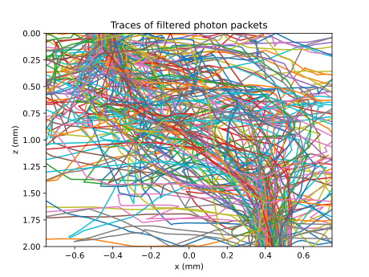
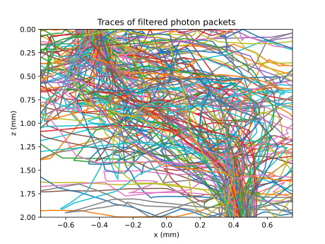
{kind=link}
The complete example¶
# -*- coding: utf-8 -*-
################################ Begin license #################################
# Copyright (C) Laboratory of Imaging technologies,
# Faculty of Electrical Engineering,
# University of Ljubljana.
#
# This file is part of PyXOpto.
#
# PyXOpto is free software: you can redistribute it and/or modify
# it under the terms of the GNU General Public License as published by
# the Free Software Foundation, either version 3 of the License, or
# (at your option) any later version.
#
# PyXOpto is distributed in the hope that it will be useful,
# but WITHOUT ANY WARRANTY; without even the implied warranty of
# MERCHANTABILITY or FITNESS FOR A PARTICULAR PURPOSE. See the
# GNU General Public License for more details.
#
# You should have received a copy of the GNU General Public License
# along with PyXOpto. If not, see <https://www.gnu.org/licenses/>.
################################# End license ##################################
# This example covers the photon packet tracing in a two-layered
# turbid medium utilizing multimode optical fibers as sources
# and detectors
from xopto.mcml import mc
from xopto.mcml.mcutil import fiber
from xopto.cl import clinfo
import numpy as np
import matplotlib.pyplot as pp
# DEFINE A COMPUTATIONAL DEVICE
# select the first device from the provided platform
cl_device = clinfo.gpu(platform='nvidia')
# DEFINE OPTICAL PROPERTIES FOR EACH LAYER
d1 = 1e-3
d2 = 1e-3
layers = mc.mclayer.Layers([
mc.mclayer.Layer(d=0.0, n=1.0, mua=0.0, mus=0.0, pf=mc.mcpf.Hg(0.0)), # layer above the medium
mc.mclayer.Layer(d=d1, n=1.33, mua=1e2, mus=125e2, pf=mc.mcpf.Hg(0.8)),
mc.mclayer.Layer(d=d2, n=1.4, mua=2e2, mus=125e2, pf=mc.mcpf.Hg(0.9)),
mc.mclayer.Layer(d=0.0, n=1.0, mua=0.0, mus=0.0, pf=mc.mcpf.Hg(0.0)), # layer below the medium
])
# DEFINE UNIFORM MULTIMODE FIBER SOURCE
source = mc.mcsource.UniformFiber(
fiber=fiber.MultimodeFiber(
dcore=200e-6, dcladding=220e-6, ncore=1.45, na=0.22
),
position=(-440e-6, 0, 0),
direction=(0.0, 0.0, 1.0)
)
# DEFINE MULTIMODE FIBER DETECTOR (IN THIS EXAMPLE ONLY BOTTOM IS USED)
detector_bottom = mc.mcdetector.FiberArray(
[fiber.FiberLayout(
fiber=fiber.MultimodeFiber(
dcore=200e-6, dcladding=220e-6, ncore=1.45, na=0.22
),
position=(440e-6, 0, d1 + d2),
direction=(0.0, 0.0, -1.0)
),]
)
detectors = mc.mcdetector.Detectors(
bottom=detector_bottom
)
# DEFINE TRACE OBJECT
nphotons = 10000 # should be in the order of 10000 for recording traces
recorded_traces = 100 # desired number of recorded traces / only useful when filtering traces
number_of_events = 500 # maximal number of photon packet interaction events
# without filter
trace_no_filter = mc.mctrace.Trace(
maxlen=number_of_events, options=mc.mctrace.Trace.TRACE_ALL,
)
# using default simulator data types
eps = mc.mctypes.McDataTypes.eps
# with filter
filter = mc.mctrace.Filter(
z=(d1 + d2 - eps, d1 + d2 + eps),
pz=(np.cos(np.arcsin(0.22/1.45)), 1.00),
r=(0, 100e-6, (440e-6, 0))
)
trace_filter = mc.mctrace.Trace(
maxlen=number_of_events, options=mc.mctrace.Trace.TRACE_ALL,
filter=filter
)
# DEFINE MC OBJECT FOR MONTE CARLO SIMULATIONS
# without filter
mc_obj_no_filter = mc.Mc(
layers=layers,
source=source,
detectors=detectors,
trace=trace_no_filter,
cl_devices=cl_device
)
mc_obj_no_filter.rmax = 1e-2
# with filter
mc_obj_filter = mc.Mc(
layers=layers,
source=source,
detectors=detectors,
trace=trace_filter,
cl_devices=cl_device
)
mc_obj_filter.rmax = 1e-2
# RUN MONTE CARLO SIMULATIONS
# without filter
output = mc_obj_no_filter.run(nphotons, verbose=True)
trace_no_filter = output[0]
# with filter
output = None
while output is None or len(output[0]) < recorded_traces:
output = mc_obj_filter.run(nphotons, verbose=True, out=output)
print('Photon packet traces detected:', len(output[0]))
trace_filter = output[0]
# VISUALIZE THE TRACES ONLY FIRST 100 TRACES
# (X-Z PLANE)
# without filter
pp.figure()
for i in range(recorded_traces):
pp.plot(
1e3*trace_no_filter.data['x'][i,:trace_no_filter.n[i]],
1e3*trace_no_filter.data['z'][i,:trace_no_filter.n[i]]
)
pp.title('Traces of all photon packets')
pp.xlabel('x (mm)')
pp.ylabel('z (mm)')
pp.xlim((-0.75, 0.75))
pp.ylim((0, 1e3*(d1 + d2)))
pp.gca().invert_yaxis()
# with filter
pp.figure()
inds = np.arange(number_of_events)
for i in range(recorded_traces):
pp.plot(
1e3*trace_filter.data['x'][i,:trace_filter.n[i]],
1e3*trace_filter.data['z'][i,:trace_filter.n[i]]
)
pp.title('Traces of filtered photon packets')
pp.xlabel('x (mm)')
pp.ylabel('z (mm)')
pp.xlim((-0.75, 0.75))
pp.ylim((0, 1e3*(d1 + d2)))
pp.gca().invert_yaxis()
pp.show()
You can run this example from the root directory of the PyXOpto package as:
python examples/mcml/tracing.py